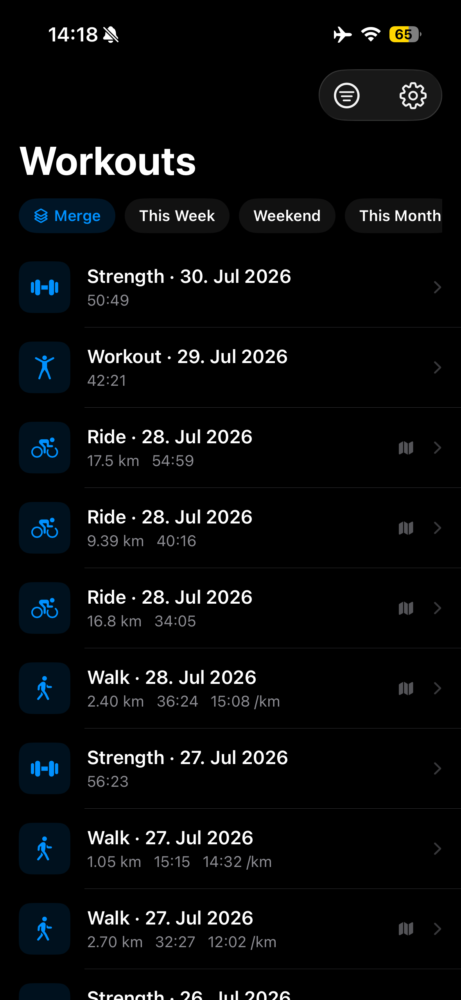
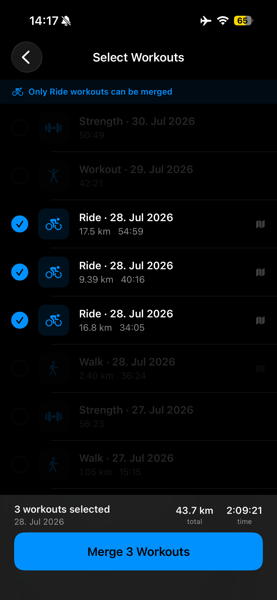
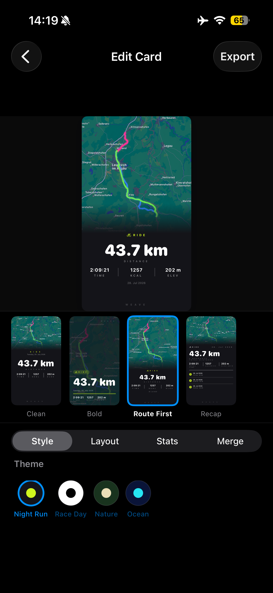
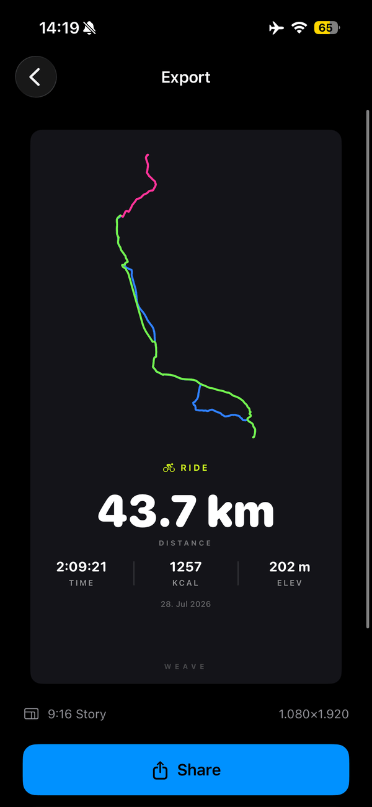

Merge runs. Share
route cards worth posting.
Weave turns your Apple Watch workout data into designed, Social-Media-ready cards — route map, pace, distance, splits. No screenshots. No Strava account.
Weave turns your Apple Watch workout data into designed, Social-Media-ready cards — route map, pace, distance, splits. No screenshots. No Strava account.




Leave your email and we’ll send a TestFlight invitation when the beta is ready. No app account or workout data required.
Everything reads straight from Apple Health. Nothing leaves your device unless you tap share.
Pick 2+ workouts of the same activity — a training block, a race weekend, a week of rides — and combine them into a single recap card with combined stats and a merged route. Your own recap card from several workouts – in one tap.
Clean, Bold, Route First, Recap, and Lift — pick the look that matches your workout and your feed. Lift is built for strength sessions, Recap for merged multi-workout stats.
Export a full card, or a transparent sticker for layering into your own Instagram Story design. How to share a workout on Instagram →
Draw your route as clean line art instead of a map screenshot — faster to render, great for a minimal look.
No account, no linked social network, no backend server. Your workout data never leaves your phone. Read the privacy policy →
A one-time purchase, not a subscription. Unlock the full Weave experience.
No. Weave needs no Strava account and no account of its own. It reads your workouts straight from Apple Health on your iPhone, so there is nothing to sign up for or connect.
No. Weave works with any workout saved in Apple Health, whether you recorded it with an Apple Watch, with your iPhone or with another app that saves workouts to Apple Health. A route map needs a GPS route saved with the workout, and heart rate graphics need heart rate data, which an Apple Watch records for you.
Yes, with Weave Pro. Pick two or more workouts of the same activity, such as every run from this week, and Weave combines them into one Recap card with your total distance and time, and your average pace and a breakdown of the individual workouts. Activities can’t be mixed: runs merge with runs, rides with rides.
No. Weave is free to download; free cards carry a small Weave watermark. Weave Pro is a one-time in-app purchase that unlocks merging, all templates, vector routes and per-route colors, and removes the watermark. Nothing renews.
Not to us. Weave has no account, no server and no tracking: it reads your workouts from Apple Health and builds every card on your iPhone. Rinnebühl Labs never receives your workout data, and a card leaves your phone only when you share it. For map cards, Apple Maps loads the map for your route’s area, like any map app.
Metric: distance in kilometers, pace per kilometer and speed in km/h. There is no setting for miles.